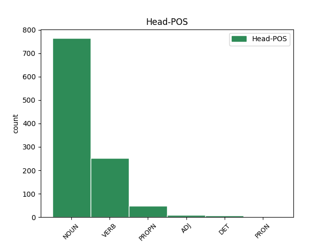

Distribution of features within this leaf

Agreement Rules sorted by frequency.
- When the dependent token is the conjunct(conj) of the head token, and the dependent token is NOUN.
1 - _ _ _ _ 0 _ _ _
2 Thanh _ _ _ _ 0 _ _ _
3 H. _ _ _ _ 0 _ _ _
4 Vuong _ _ _ _ 0 _ _ _
5 , _ _ _ _ 0 _ _ _
6 Théorie théorie NOUN _ Gender=Fem|Number=Sing 0 _ _ _
7 de _ _ _ _ 0 _ _ _
8 les _ _ _ _ 0 _ _ _
9 contextes _ _ _ _ 0 _ _ _
10 et _ _ _ _ 0 _ _ _
11 relations relation NOUN _ Gender=Fem|Number=Plur 6 conj _ _
12 internationales _ _ _ _ 0 _ _ _
13 : _ _ _ _ 0 _ _ _
14 départ _ _ _ _ 0 _ _ _
15 de _ _ _ _ 0 _ _ _
16 la _ _ _ _ 0 _ _ _
17 première _ _ _ _ 0 _ _ _
18 Guerre _ _ _ _ 0 _ _ _
19 d' _ _ _ _ 0 _ _ _
20 Indochine _ _ _ _ 0 _ _ _
21 , _ _ _ _ 0 _ _ _
22 dans _ _ _ _ 0 _ _ _
23 Études _ _ _ _ 0 _ _ _
24 Internationales _ _ _ _ 0 _ _ _
25 , _ _ _ _ 0 _ _ _
26 Vol. _ _ _ _ 0 _ _ _
27 XVII _ _ _ _ 0 _ _ _
28 , _ _ _ _ 0 _ _ _
29 No. _ _ _ _ 0 _ _ _
30 3 _ _ _ _ 0 _ _ _
31 , _ _ _ _ 0 _ _ _
32 pp. _ _ _ _ 0 _ _ _
33 571-597 _ _ _ _ 0 _ _ _
34 , _ _ _ _ 0 _ _ _
35 septembre _ _ _ _ 0 _ _ _
36 1986 _ _ _ _ 0 _ _ _
1 Catégories catégorie NOUN _ Gender=Fem|Number=Plur 0 _ _ _
2 : _ _ _ _ 0 _ _ _
3 Guerre guerre NOUN _ Gender=Fem|Number=Sing 1 mod _ _
4 d' _ _ _ _ 0 _ _ _
5 Indochine _ _ _ _ 0 _ _ _
6 . _ _ _ _ 0 _ _ _
1 Le _ _ _ _ 0 _ _ _
2 6 _ _ _ _ 0 _ _ _
3 août _ _ _ _ 0 _ _ _
4 , _ _ _ _ 0 _ _ _
5 Reuters _ _ _ _ 0 _ _ _
6 a _ _ _ _ 0 _ _ _
7 mis mettre VERB _ Gender=Masc|Tense=Past|VerbForm=Part 0 _ _ _
8 un _ _ _ _ 0 _ _ _
9 terme terme NOUN _ Gender=Masc|Number=Sing 7 comp:obj _ _
10 à _ _ _ _ 0 _ _ _
11 sa _ _ _ _ 0 _ _ _
12 collaboration _ _ _ _ 0 _ _ _
13 avec _ _ _ _ 0 _ _ _
14 Adnan _ _ _ _ 0 _ _ _
15 Hajj _ _ _ _ 0 _ _ _
16 qui _ _ _ _ 0 _ _ _
17 se _ _ _ _ 0 _ _ _
18 défendait _ _ _ _ 0 _ _ _
19 en _ _ _ _ 0 _ _ _
20 expliquant _ _ _ _ 0 _ _ _
21 avoir _ _ _ _ 0 _ _ _
22 voulu _ _ _ _ 0 _ _ _
23 retirer _ _ _ _ 0 _ _ _
24 des _ _ _ _ 0 _ _ _
25 traces _ _ _ _ 0 _ _ _
26 de _ _ _ _ 0 _ _ _
27 poussières _ _ _ _ 0 _ _ _
28 sur _ _ _ _ 0 _ _ _
29 les _ _ _ _ 0 _ _ _
30 photos _ _ _ _ 0 _ _ _
31 originales _ _ _ _ 0 _ _ _
32 et _ _ _ _ 0 _ _ _
33 que _ _ _ _ 0 _ _ _
34 ses _ _ _ _ 0 _ _ _
35 conditions _ _ _ _ 0 _ _ _
36 de _ _ _ _ 0 _ _ _
37 travail _ _ _ _ 0 _ _ _
38 , _ _ _ _ 0 _ _ _
39 dans _ _ _ _ 0 _ _ _
40 un _ _ _ _ 0 _ _ _
41 lieu _ _ _ _ 0 _ _ _
42 peu _ _ _ _ 0 _ _ _
43 éclairé _ _ _ _ 0 _ _ _
44 , _ _ _ _ 0 _ _ _
45 avaient _ _ _ _ 0 _ _ _
46 conduit _ _ _ _ 0 _ _ _
47 à _ _ _ _ 0 _ _ _
48 ces _ _ _ _ 0 _ _ _
49 modifications _ _ _ _ 0 _ _ _
50 de _ _ _ _ 0 _ _ _
51 les _ _ _ _ 0 _ _ _
52 photos _ _ _ _ 0 _ _ _
53 [ _ _ _ _ 0 _ _ _
54 7 _ _ _ _ 0 _ _ _
55 ] _ _ _ _ 0 _ _ _
56 . _ _ _ _ 0 _ _ _
1 Pour _ _ _ _ 0 _ _ _
2 ce _ _ _ _ 0 _ _ _
3 qui _ _ _ _ 0 _ _ _
4 est _ _ _ _ 0 _ _ _
5 de _ _ _ _ 0 _ _ _
6 Michel _ _ _ _ 0 _ _ _
7 Giraud _ _ _ _ 0 _ _ _
8 , _ _ _ _ 0 _ _ _
9 celui-ci _ _ _ _ 0 _ _ _
10 aurait _ _ _ _ 0 _ _ _
11 employé _ _ _ _ 0 _ _ _
12 plusieurs _ _ _ _ 0 _ _ _
13 secrétaires _ _ _ _ 0 _ _ _
14 dans _ _ _ _ 0 _ _ _
15 un _ _ _ _ 0 _ _ _
16 mouvement _ _ _ _ 0 _ _ _
17 appelé appeler VERB _ Gender=Masc|Number=Sing|Tense=Past|VerbForm=Part 0 _ _ _
18 Forum forum NOUN _ Gender=Masc|Number=Sing 17 comp:pred _ _
19 de _ _ _ _ 0 _ _ _
20 le _ _ _ _ 0 _ _ _
21 citoyen _ _ _ _ 0 _ _ _
22 . _ _ _ _ 0 _ _ _
1 Je _ _ _ _ 0 _ _ _
2 dois _ _ _ _ 0 _ _ _
3 malheureusement _ _ _ _ 0 _ _ _
4 constater _ _ _ _ 0 _ _ _
5 que _ _ _ _ 0 _ _ _
6 , _ _ _ _ 0 _ _ _
7 si _ _ _ _ 0 _ _ _
8 on _ _ _ _ 0 _ _ _
9 aligne _ _ _ _ 0 _ _ _
10 les _ _ _ _ 0 _ _ _
11 chiffres _ _ _ _ 0 _ _ _
12 une un DET _ Definite=Ind|Gender=Fem|Number=Sing|PronType=Art 0 _ _ _
13 fois fois NOUN _ Gender=Fem 12 unk@fixed _ _
14 la _ _ _ _ 0 _ _ _
15 conférence _ _ _ _ 0 _ _ _
16 terminée _ _ _ _ 0 _ _ _
17 , _ _ _ _ 0 _ _ _
18 la _ _ _ _ 0 _ _ _
19 priorité _ _ _ _ 0 _ _ _
20 est _ _ _ _ 0 _ _ _
21 fortement _ _ _ _ 0 _ _ _
22 réorientée _ _ _ _ 0 _ _ _
23 en _ _ _ _ 0 _ _ _
24 faveur _ _ _ _ 0 _ _ _
25 de _ _ _ _ 0 _ _ _
26 la _ _ _ _ 0 _ _ _
27 reconstruction _ _ _ _ 0 _ _ _
28 . _ _ _ _ 0 _ _ _
1 Son _ _ _ _ 0 _ _ _
2 casier casier NOUN _ Gender=Masc|Number=Sing 5 subj _ _
3 judiciaire _ _ _ _ 0 _ _ _
4 ainsi _ _ _ _ 0 _ _ _
5 blanchi blanchir VERB _ Gender=Masc|Number=Sing|Tense=Past|VerbForm=Part 0 _ _ _
6 , _ _ _ _ 0 _ _ _
7 Guy _ _ _ _ 0 _ _ _
8 Drut _ _ _ _ 0 _ _ _
9 a _ _ _ _ 0 _ _ _
10 pu _ _ _ _ 0 _ _ _
11 garder _ _ _ _ 0 _ _ _
12 son _ _ _ _ 0 _ _ _
13 siège _ _ _ _ 0 _ _ _
14 de _ _ _ _ 0 _ _ _
15 membre _ _ _ _ 0 _ _ _
16 de _ _ _ _ 0 _ _ _
17 le _ _ _ _ 0 _ _ _
18 Comité _ _ _ _ 0 _ _ _
19 international _ _ _ _ 0 _ _ _
20 olympique _ _ _ _ 0 _ _ _
21 ( _ _ _ _ 0 _ _ _
22 CIO _ _ _ _ 0 _ _ _
23 ) _ _ _ _ 0 _ _ _
24 et _ _ _ _ 0 _ _ _
25 les _ _ _ _ 0 _ _ _
26 avantages _ _ _ _ 0 _ _ _
27 et _ _ _ _ 0 _ _ _
28 prébendes _ _ _ _ 0 _ _ _
29 de _ _ _ _ 0 _ _ _
30 cette _ _ _ _ 0 _ _ _
31 fonction _ _ _ _ 0 _ _ _
32 . _ _ _ _ 0 _ _ _
1 Après _ _ _ _ 0 _ _ _
2 la _ _ _ _ 0 _ _ _
3 libération _ _ _ _ 0 _ _ _
4 de _ _ _ _ 0 _ _ _
5 Jean-Paul _ _ _ _ 0 _ _ _
6 Kauffmann _ _ _ _ 0 _ _ _
7 , _ _ _ _ 0 _ _ _
8 Marcel _ _ _ _ 0 _ _ _
9 Carton _ _ _ _ 0 _ _ _
10 et _ _ _ _ 0 _ _ _
11 Marcel _ _ _ _ 0 _ _ _
12 Fontaine _ _ _ _ 0 _ _ _
13 , _ _ _ _ 0 _ _ _
14 restent _ _ _ _ 0 _ _ _
15 encore _ _ _ _ 0 _ _ _
16 à _ _ _ _ 0 _ _ _
17 les _ _ _ _ 0 _ _ _
18 mains _ _ _ _ 0 _ _ _
19 de _ _ _ _ 0 _ _ _
20 divers _ _ _ _ 0 _ _ _
21 groupes _ _ _ _ 0 _ _ _
22 terroristes _ _ _ _ 0 _ _ _
23 les _ _ _ _ 0 _ _ _
24 passagers _ _ _ _ 0 _ _ _
25 d' _ _ _ _ 0 _ _ _
26 un _ _ _ _ 0 _ _ _
27 bateau _ _ _ _ 0 _ _ _
28 de _ _ _ _ 0 _ _ _
29 plaisance _ _ _ _ 0 _ _ _
30 , _ _ _ _ 0 _ _ _
31 le _ _ _ _ 0 _ _ _
32 Silco _ _ _ _ 0 _ _ _
33 , _ _ _ _ 0 _ _ _
34 dont _ _ _ _ 0 _ _ _
35 la _ _ _ _ 0 _ _ _
36 Française _ _ _ _ 0 _ _ _
37 Jacqueline _ _ _ _ 0 _ _ _
38 Valente _ _ _ _ 0 _ _ _
39 et _ _ _ _ 0 _ _ _
40 ses _ _ _ _ 0 _ _ _
41 filles _ _ _ _ 0 _ _ _
42 , _ _ _ _ 0 _ _ _
43 et _ _ _ _ 0 _ _ _
44 quinze _ _ _ _ 0 _ _ _
45 otages otage NOUN _ Gender=Masc|Number=Plur 0 _ _ _
46 étrangers _ _ _ _ 0 _ _ _
47 dont _ _ _ _ 0 _ _ _
48 huit _ _ _ _ 0 _ _ _
49 Américains américain NOUN _ Gender=Masc|Number=Plur 45 mod@relcl _ SpaceAfter=No
50 . _ _ _ _ 0 _ _ _
1 Des _ _ _ _ 0 _ _ _
2 réactions _ _ _ _ 0 _ _ _
3 allergiques _ _ _ _ 0 _ _ _
4 ont _ _ _ _ 0 _ _ _
5 été _ _ _ _ 0 _ _ _
6 rapportées _ _ _ _ 0 _ _ _
7 , _ _ _ _ 0 _ _ _
8 incluant _ _ _ _ 0 _ _ _
9 de _ _ _ _ 0 _ _ _
10 rares _ _ _ _ 0 _ _ _
11 cas _ _ _ _ 0 _ _ _
12 de _ _ _ _ 0 _ _ _
13 difficultés _ _ _ _ 0 _ _ _
14 respiratoires _ _ _ _ 0 _ _ _
15 , _ _ _ _ 0 _ _ _
16 d' _ _ _ _ 0 _ _ _
17 urticaire _ _ _ _ 0 _ _ _
18 et _ _ _ _ 0 _ _ _
19 d' _ _ _ _ 0 _ _ _
20 oedèmes _ _ _ _ 0 _ _ _
21 de _ _ _ _ 0 _ _ _
22 Quincke _ _ _ _ 0 _ _ _
23 ( _ _ _ _ 0 _ _ _
24 tel tel ADJ _ Gender=Masc|Number=Sing 0 _ _ _
25 un _ _ _ _ 0 _ _ _
26 gonflement gonflement NOUN _ Gender=Masc|Number=Sing 24 unk _ _
27 de _ _ _ _ 0 _ _ _
28 le _ _ _ _ 0 _ _ _
29 visage _ _ _ _ 0 _ _ _
30 , _ _ _ _ 0 _ _ _
31 de _ _ _ _ 0 _ _ _
32 la _ _ _ _ 0 _ _ _
33 langue _ _ _ _ 0 _ _ _
34 ou _ _ _ _ 0 _ _ _
35 de _ _ _ _ 0 _ _ _
36 le _ _ _ _ 0 _ _ _
37 cou _ _ _ _ 0 _ _ _
38 ) _ _ _ _ 0 _ _ _
39 . _ _ _ _ 0 _ _ _
1 Dans _ _ _ _ 0 _ _ _
2 les _ _ _ _ 0 _ _ _
3 études _ _ _ _ 0 _ _ _
4 HORIZON-PFT _ _ _ _ 0 _ _ _
5 et _ _ _ _ 0 _ _ _
6 HORIZON-RFT _ _ _ _ 0 _ _ _
7 ( _ _ _ _ 0 _ _ _
8 étude _ _ _ _ 0 _ _ _
9 après _ _ _ _ 0 _ _ _
10 fracture _ _ _ _ 0 _ _ _
11 de _ _ _ _ 0 _ _ _
12 hanche _ _ _ _ 0 _ _ _
13 ) _ _ _ _ 0 _ _ _
14 , _ _ _ _ 0 _ _ _
15 l' _ _ _ _ 0 _ _ _
16 incidence _ _ _ _ 0 _ _ _
17 globale _ _ _ _ 0 _ _ _
18 de _ _ _ _ 0 _ _ _
19 les _ _ _ _ 0 _ _ _
20 fibrillations _ _ _ _ 0 _ _ _
21 auriculaires _ _ _ _ 0 _ _ _
22 a _ _ _ _ 0 _ _ _
23 été _ _ _ _ 0 _ _ _
24 comparable _ _ _ _ 0 _ _ _
25 entre _ _ _ _ 0 _ _ _
26 le _ _ _ _ 0 _ _ _
27 groupe _ _ _ _ 0 _ _ _
28 Aclasta _ _ _ _ 0 _ _ _
29 ( _ _ _ _ 0 _ _ _
30 2,6 _ _ _ _ 0 _ _ _
31 % _ _ _ _ 0 _ _ _
32 ) _ _ _ _ 0 _ _ _
33 et _ _ _ _ 0 _ _ _
34 le _ _ _ _ 0 _ _ _
35 groupe groupe NOUN _ Gender=Masc|Number=Sing 0 _ _ _
36 placebo _ _ _ _ 0 _ _ _
37 ( _ _ _ _ 0 _ _ _
38 2,1 _ _ _ _ 0 _ _ _
39 ) _ _ _ _ 0 _ _ _
40 % % NOUN _ Gender=Masc 35 parataxis _ SpaceAfter=No
41 . _ _ _ _ 0 _ _ _
1 François _ _ _ _ 0 _ _ _
2 Mitterrand _ _ _ _ 0 _ _ _
3 était _ _ _ _ 0 _ _ _
4 alors _ _ _ _ 0 _ _ _
5 ministre _ _ _ _ 0 _ _ _
6 de _ _ _ _ 0 _ _ _
7 les _ _ _ _ 0 _ _ _
8 Colonies _ _ _ _ 0 _ _ _
9 ( _ _ _ _ 0 _ _ _
10 à _ _ _ _ 0 _ _ _
11 partir _ _ _ _ 0 _ _ _
12 de _ _ _ _ 0 _ _ _
13 1950 _ _ _ _ 0 _ _ _
14 ) _ _ _ _ 0 _ _ _
15 et _ _ _ _ 0 _ _ _
16 René René PROPN _ Gender=Masc|Number=Sing 0 _ _ _
17 Bousquet _ _ _ _ 0 _ _ _
18 directeur directeur NOUN _ Gender=Masc|Number=Sing 16 orphan _ _
19 de _ _ _ _ 0 _ _ _
20 la _ _ _ _ 0 _ _ _
21 Banque _ _ _ _ 0 _ _ _
22 d' _ _ _ _ 0 _ _ _
23 Indochine _ _ _ _ 0 _ _ _
24 . _ _ _ _ 0 _ _ _
Disagree Examples:
1 En _ _ _ _ 0 _ _ _
2 1953 _ _ _ _ 0 _ _ _
3 , _ _ _ _ 0 _ _ _
4 les _ _ _ _ 0 _ _ _
5 hauts _ _ _ _ 0 _ _ _
6 fourneaux fourneau NOUN _ Gender=Masc|Number=Plur 0 _ _ _
7 et _ _ _ _ 0 _ _ _
8 fonderies fonderie NOUN _ Gender=Fem|Number=Plur 6 conj _ _
9 de _ _ _ _ 0 _ _ _
10 Cousances _ _ _ _ 0 _ _ _
11 virent _ _ _ _ 0 _ _ _
12 le _ _ _ _ 0 _ _ _
13 jour _ _ _ _ 0 _ _ _
14 , _ _ _ _ 0 _ _ _
15 puis _ _ _ _ 0 _ _ _
16 Jean _ _ _ _ 0 _ _ _
17 Baudesson _ _ _ _ 0 _ _ _
18 , _ _ _ _ 0 _ _ _
19 maire _ _ _ _ 0 _ _ _
20 échevin _ _ _ _ 0 _ _ _
21 de _ _ _ _ 0 _ _ _
22 Saint-Dizier _ _ _ _ 0 _ _ _
23 , _ _ _ _ 0 _ _ _
24 autorisé _ _ _ _ 0 _ _ _
25 par _ _ _ _ 0 _ _ _
26 lettres _ _ _ _ 0 _ _ _
27 patentes _ _ _ _ 0 _ _ _
28 d' _ _ _ _ 0 _ _ _
29 Henri _ _ _ _ 0 _ _ _
30 IV _ _ _ _ 0 _ _ _
31 , _ _ _ _ 0 _ _ _
32 installa _ _ _ _ 0 _ _ _
33 à _ _ _ _ 0 _ _ _
34 Marnaval _ _ _ _ 0 _ _ _
35 - _ _ _ _ 0 _ _ _
36 qui _ _ _ _ 0 _ _ _
37 signifiait _ _ _ _ 0 _ _ _
38 val _ _ _ _ 0 _ _ _
39 ou _ _ _ _ 0 _ _ _
40 vallée _ _ _ _ 0 _ _ _
41 de _ _ _ _ 0 _ _ _
42 la _ _ _ _ 0 _ _ _
43 Marne _ _ _ _ 0 _ _ _
44 ou _ _ _ _ 0 _ _ _
45 bien _ _ _ _ 0 _ _ _
46 en _ _ _ _ 0 _ _ _
47 aval _ _ _ _ 0 _ _ _
48 de _ _ _ _ 0 _ _ _
49 la _ _ _ _ 0 _ _ _
50 Marne _ _ _ _ 0 _ _ _
51 - _ _ _ _ 0 _ _ _
52 , _ _ _ _ 0 _ _ _
53 une _ _ _ _ 0 _ _ _
54 forge _ _ _ _ 0 _ _ _
55 qui _ _ _ _ 0 _ _ _
56 connut _ _ _ _ 0 _ _ _
57 son _ _ _ _ 0 _ _ _
58 apogée _ _ _ _ 0 _ _ _
59 à _ _ _ _ 0 _ _ _
60 le _ _ _ _ 0 _ _ _
61 XIXe _ _ _ _ 0 _ _ _
62 siècle _ _ _ _ 0 _ _ _
63 . _ _ _ _ 0 _ _ _
1 En _ _ _ _ 0 _ _ _
2 1953 _ _ _ _ 0 _ _ _
3 , _ _ _ _ 0 _ _ _
4 les _ _ _ _ 0 _ _ _
5 hauts _ _ _ _ 0 _ _ _
6 fourneaux _ _ _ _ 0 _ _ _
7 et _ _ _ _ 0 _ _ _
8 fonderies _ _ _ _ 0 _ _ _
9 de _ _ _ _ 0 _ _ _
10 Cousances _ _ _ _ 0 _ _ _
11 virent _ _ _ _ 0 _ _ _
12 le _ _ _ _ 0 _ _ _
13 jour _ _ _ _ 0 _ _ _
14 , _ _ _ _ 0 _ _ _
15 puis _ _ _ _ 0 _ _ _
16 Jean _ _ _ _ 0 _ _ _
17 Baudesson _ _ _ _ 0 _ _ _
18 , _ _ _ _ 0 _ _ _
19 maire _ _ _ _ 0 _ _ _
20 échevin _ _ _ _ 0 _ _ _
21 de _ _ _ _ 0 _ _ _
22 Saint-Dizier _ _ _ _ 0 _ _ _
23 , _ _ _ _ 0 _ _ _
24 autorisé _ _ _ _ 0 _ _ _
25 par _ _ _ _ 0 _ _ _
26 lettres _ _ _ _ 0 _ _ _
27 patentes _ _ _ _ 0 _ _ _
28 d' _ _ _ _ 0 _ _ _
29 Henri _ _ _ _ 0 _ _ _
30 IV _ _ _ _ 0 _ _ _
31 , _ _ _ _ 0 _ _ _
32 installa _ _ _ _ 0 _ _ _
33 à _ _ _ _ 0 _ _ _
34 Marnaval _ _ _ _ 0 _ _ _
35 - _ _ _ _ 0 _ _ _
36 qui _ _ _ _ 0 _ _ _
37 signifiait _ _ _ _ 0 _ _ _
38 val val NOUN _ Gender=Masc|Number=Sing 0 _ _ _
39 ou _ _ _ _ 0 _ _ _
40 vallée vallée NOUN _ Gender=Fem|Number=Sing 38 conj _ _
41 de _ _ _ _ 0 _ _ _
42 la _ _ _ _ 0 _ _ _
43 Marne _ _ _ _ 0 _ _ _
44 ou _ _ _ _ 0 _ _ _
45 bien _ _ _ _ 0 _ _ _
46 en _ _ _ _ 0 _ _ _
47 aval _ _ _ _ 0 _ _ _
48 de _ _ _ _ 0 _ _ _
49 la _ _ _ _ 0 _ _ _
50 Marne _ _ _ _ 0 _ _ _
51 - _ _ _ _ 0 _ _ _
52 , _ _ _ _ 0 _ _ _
53 une _ _ _ _ 0 _ _ _
54 forge _ _ _ _ 0 _ _ _
55 qui _ _ _ _ 0 _ _ _
56 connut _ _ _ _ 0 _ _ _
57 son _ _ _ _ 0 _ _ _
58 apogée _ _ _ _ 0 _ _ _
59 à _ _ _ _ 0 _ _ _
60 le _ _ _ _ 0 _ _ _
61 XIXe _ _ _ _ 0 _ _ _
62 siècle _ _ _ _ 0 _ _ _
63 . _ _ _ _ 0 _ _ _
1 Il _ _ _ _ 0 _ _ _
2 a _ _ _ _ 0 _ _ _
3 rappelé _ _ _ _ 0 _ _ _
4 que _ _ _ _ 0 _ _ _
5 plusieurs _ _ _ _ 0 _ _ _
6 automobilistes _ _ _ _ 0 _ _ _
7 ont _ _ _ _ 0 _ _ _
8 quitté quitter VERB _ Gender=Masc|Number=Sing|Tense=Past|VerbForm=Part 0 _ _ _
9 la _ _ _ _ 0 _ _ _
10 chaussée chaussée NOUN _ Gender=Fem|Number=Sing 8 comp:obj _ _
11 à _ _ _ _ 0 _ _ _
12 l' _ _ _ _ 0 _ _ _
13 intersection _ _ _ _ 0 _ _ _
14 de _ _ _ _ 0 _ _ _
15 la _ _ _ _ 0 _ _ _
16 RD192 _ _ _ _ 0 _ _ _
17 et _ _ _ _ 0 _ _ _
18 de _ _ _ _ 0 _ _ _
19 le _ _ _ _ 0 _ _ _
20 chemin _ _ _ _ 0 _ _ _
21 rural _ _ _ _ 0 _ _ _
22 de _ _ _ _ 0 _ _ _
23 la _ _ _ _ 0 _ _ _
24 Vaux _ _ _ _ 0 _ _ _
25 de _ _ _ _ 0 _ _ _
26 les _ _ _ _ 0 _ _ _
27 Fossés _ _ _ _ 0 _ _ _
28 et _ _ _ _ 0 _ _ _
29 qu' _ _ _ _ 0 _ _ _
30 il _ _ _ _ 0 _ _ _
31 convient _ _ _ _ 0 _ _ _
32 de _ _ _ _ 0 _ _ _
33 modifier _ _ _ _ 0 _ _ _
34 le _ _ _ _ 0 _ _ _
35 régime _ _ _ _ 0 _ _ _
36 de _ _ _ _ 0 _ _ _
37 priorité _ _ _ _ 0 _ _ _
38 à _ _ _ _ 0 _ _ _
39 cet _ _ _ _ 0 _ _ _
40 endroit _ _ _ _ 0 _ _ _
41 . _ _ _ _ 0 _ _ _
1 Un _ _ _ _ 0 _ _ _
2 voyage _ _ _ _ 0 _ _ _
3 étonnant _ _ _ _ 0 _ _ _
4 où _ _ _ _ 0 _ _ _
5 photos _ _ _ _ 0 _ _ _
6 , _ _ _ _ 0 _ _ _
7 réalisations réalisation NOUN _ Gender=Fem|Number=Plur 0 _ _ _
8 , _ _ _ _ 0 _ _ _
9 vieux _ _ _ _ 0 _ _ _
10 outils outil NOUN _ Gender=Masc|Number=Plur 7 conj _ SpaceAfter=No
11 , _ _ _ _ 0 _ _ _
12 documents _ _ _ _ 0 _ _ _
13 anciens _ _ _ _ 0 _ _ _
14 , _ _ _ _ 0 _ _ _
15 permettront _ _ _ _ 0 _ _ _
16 de _ _ _ _ 0 _ _ _
17 mesurer _ _ _ _ 0 _ _ _
18 combien _ _ _ _ 0 _ _ _
19 ce _ _ _ _ 0 _ _ _
20 petit _ _ _ _ 0 _ _ _
21 bout _ _ _ _ 0 _ _ _
22 de _ _ _ _ 0 _ _ _
23 terre _ _ _ _ 0 _ _ _
24 de _ _ _ _ 0 _ _ _
25 France _ _ _ _ 0 _ _ _
26 , _ _ _ _ 0 _ _ _
27 situé _ _ _ _ 0 _ _ _
28 à _ _ _ _ 0 _ _ _
29 les _ _ _ _ 0 _ _ _
30 Marches _ _ _ _ 0 _ _ _
31 de _ _ _ _ 0 _ _ _
32 l' _ _ _ _ 0 _ _ _
33 Est _ _ _ _ 0 _ _ _
34 , _ _ _ _ 0 _ _ _
35 lieu _ _ _ _ 0 _ _ _
36 de _ _ _ _ 0 _ _ _
37 passage _ _ _ _ 0 _ _ _
38 de _ _ _ _ 0 _ _ _
39 prédilection _ _ _ _ 0 _ _ _
40 de _ _ _ _ 0 _ _ _
41 les _ _ _ _ 0 _ _ _
42 invasions _ _ _ _ 0 _ _ _
43 , _ _ _ _ 0 _ _ _
44 fut _ _ _ _ 0 _ _ _
45 une _ _ _ _ 0 _ _ _
46 terre _ _ _ _ 0 _ _ _
47 de _ _ _ _ 0 _ _ _
48 labeur _ _ _ _ 0 _ _ _
49 , _ _ _ _ 0 _ _ _
50 et _ _ _ _ 0 _ _ _
51 combien _ _ _ _ 0 _ _ _
52 le _ _ _ _ 0 _ _ _
53 travail _ _ _ _ 0 _ _ _
54 de _ _ _ _ 0 _ _ _
55 ses _ _ _ _ 0 _ _ _
56 habitants _ _ _ _ 0 _ _ _
57 , _ _ _ _ 0 _ _ _
58 durs _ _ _ _ 0 _ _ _
59 à _ _ _ _ 0 _ _ _
60 la _ _ _ _ 0 _ _ _
61 tâche _ _ _ _ 0 _ _ _
62 , _ _ _ _ 0 _ _ _
63 doit _ _ _ _ 0 _ _ _
64 être _ _ _ _ 0 _ _ _
65 reconnu _ _ _ _ 0 _ _ _
66 et _ _ _ _ 0 _ _ _
67 mis _ _ _ _ 0 _ _ _
68 en _ _ _ _ 0 _ _ _
69 valeur _ _ _ _ 0 _ _ _
70 . _ _ _ _ 0 _ _ _
1 Après _ _ _ _ 0 _ _ _
2 avoir _ _ _ _ 0 _ _ _
3 coupé _ _ _ _ 0 _ _ _
4 le _ _ _ _ 0 _ _ _
5 ruban _ _ _ _ 0 _ _ _
6 qui _ _ _ _ 0 _ _ _
7 en _ _ _ _ 0 _ _ _
8 marque _ _ _ _ 0 _ _ _
9 symboliquement _ _ _ _ 0 _ _ _
10 l' _ _ _ _ 0 _ _ _
11 entrée _ _ _ _ 0 _ _ _
12 , _ _ _ _ 0 _ _ _
13 le _ _ _ _ 0 _ _ _
14 maire maire NOUN _ Gender=Masc|Number=Sing 0 _ _ _
15 et _ _ _ _ 0 _ _ _
16 la _ _ _ _ 0 _ _ _
17 directrice directrice NOUN _ Gender=Fem|Number=Sing 14 conj _ _
18 ont _ _ _ _ 0 _ _ _
19 conduit _ _ _ _ 0 _ _ _
20 la _ _ _ _ 0 _ _ _
21 visite _ _ _ _ 0 _ _ _
22 commentée _ _ _ _ 0 _ _ _
23 de _ _ _ _ 0 _ _ _
24 les _ _ _ _ 0 _ _ _
25 locaux _ _ _ _ 0 _ _ _
26 . _ _ _ _ 0 _ _ _